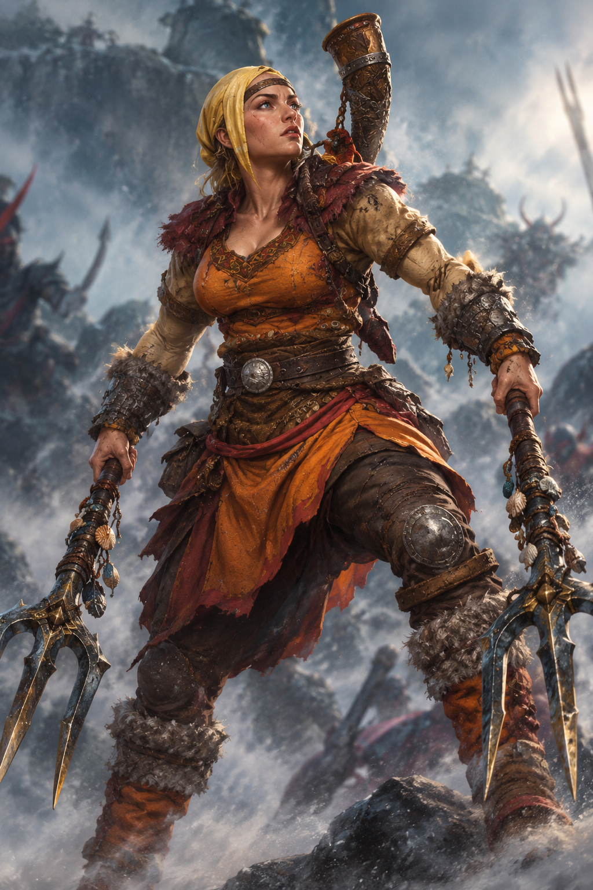

Overview
Name: Ronjaree 'RJ' Jarred
Race: Human
Class: Barbarian
Alignment: Neutral
Background: Outlander
Ability Scores
- Strength: 18
- Dexterity: 14
- Constitution: 15
- Intelligence: 14
- Wisdom: 14
- Charisma: 13
Senses
- Passive Perception: 15
- Passive Investigation: 12
- Passive Insight: 12
Backstory
Born deep inside Colossus, the Kahuna of the volcanic range of Khar'mir to Halo and Felix Cassis. Delighted at the birth of their daughter, they ascended her to become a Daughter of Khar'mir.
This opportunity is only available to the Doyen and Doyenne pairs who are the elders and leaders of the Tuk people. Ronjaree grew up in and amongst the Tuk people and amongst their customs.
They are home to those outcast, shunned, or exiled from the world and take those no one else wants. Once a part of the Tuk people, forever a part of the Tuk people. They aren't bonded by blood, but
something far greater in their connection to the raw energy of Khar'mir.
She was heavily trained in the martial use of weapons since the day she could hold her first axe. Over time she came to favor the infamous trident and learned to fight with two instead of one.
She has no blood brothers or sisters, but many she would consider so. Ronjaree has spent her time learning the art of combat and how to best her opponents before things get out of hand. She enjoys helping
the newcomers get settled and has made herself a pillar of the Tuk people.
As her test to the devotion of her people, she must go into the world and provide a safe haven for those cast aside by the civilities of society. So Ronjaree took this opportunity to explore the world as
a great honor and seeks to save those that cannot save themselves.
Special Inventory Items
- Emergency Float Serum
You know...
- Riddick Alexsander
- He is from Witchglass
- Has black striations
- A weird symbol for a necklace
- 'Follow the sigils. Don't trust anyone.'